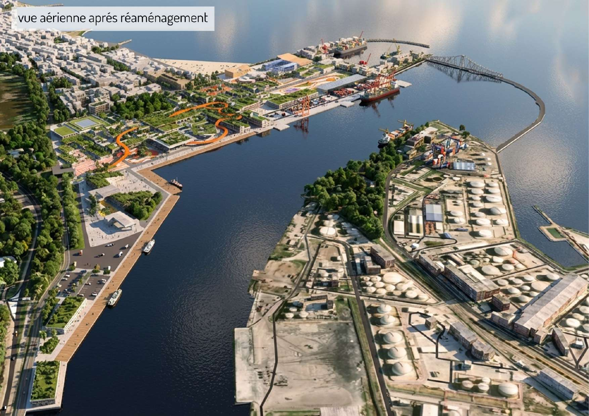
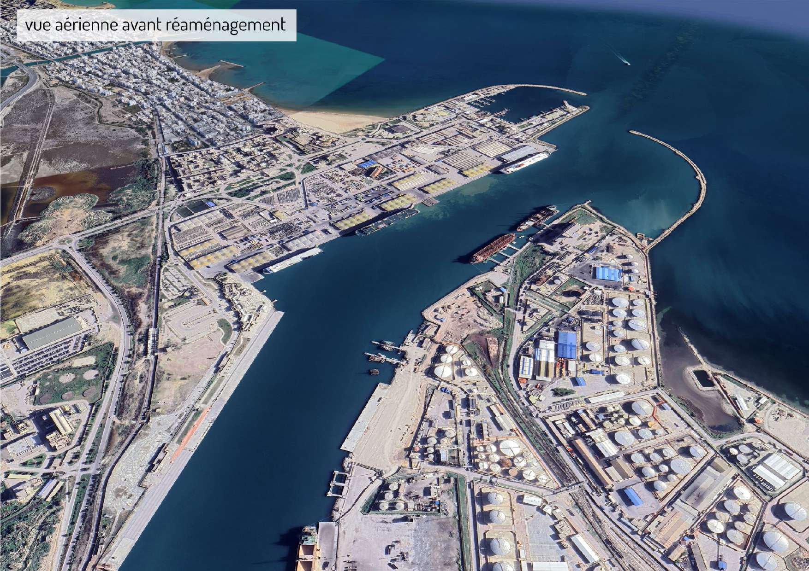
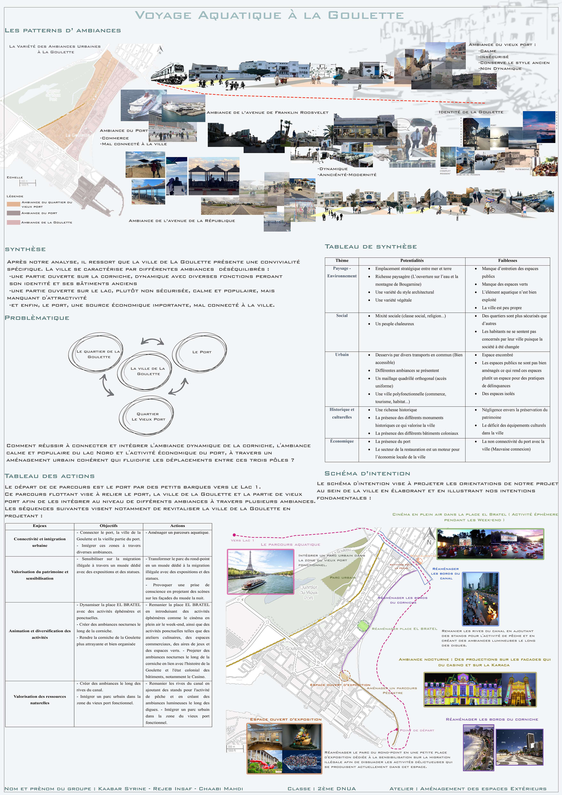
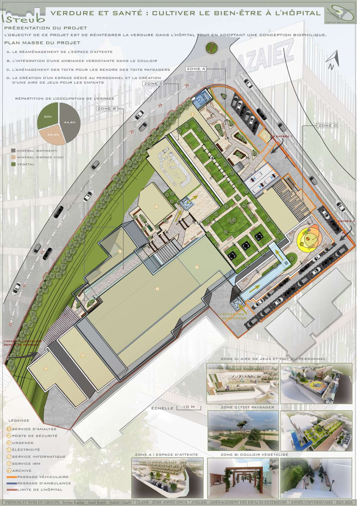
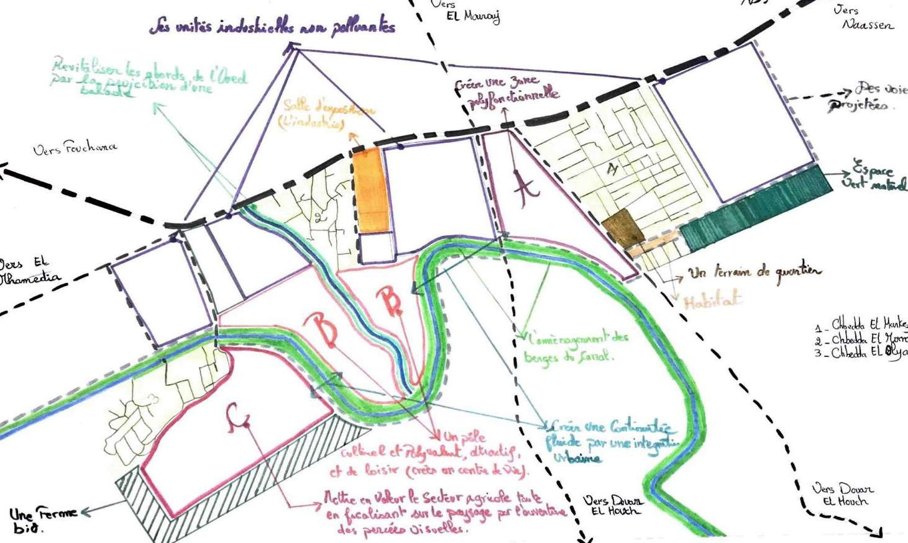
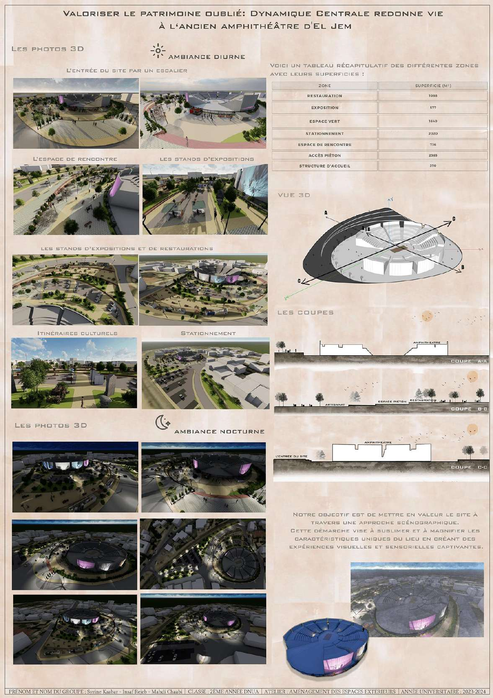

Crafting sustainable urban futures, biophilic healing environments, and circular spatial frameworks. Combining GIS analysis & physical geography research in Germany with Mediterranean urban design expertise.
Academic Exchange in Physical Geography (Univ. of Bremen, DE) & State Diploma in Urban Planning (ISTEUB Tunis)
Urban Planning, GIS & Remote Sensing, AutoCAD, Revit, Lumion, Biophilic & Heritage Design
English (Full Professional), French (Native/Bilingual), German (Academic Mobility in DE)
I am Mahdi Chaabi, an Urban Planner and Spatial Analyst based in Wolfsburg 38448, holding a National State Diploma in Urban Planning and Spatial Development (ISTEUB Tunis) and completed academic exchange semesters in Physical Geography at the University of Bremen (Germany) and Marburg University.
My methodology bridges the gap between high-precision GIS spatial data and immersive 3D spatial design (AutoCAD, Revit, Lumion, Rhino). From port-city integration to hospital biophilic healing spaces, informal settlement restructuring, and heritage conservation, my focus is delivering actionable, resilient, and human-centric urban spaces.
Academic exchange semester focusing on physical geography, environmental modeling, remote sensing, and advanced spatial analysis techniques.
International academic exchange program expanding expertise in European spatial planning policy, GIS mapping, and landscape ecology.
National State Diploma in Urban Planning & Spatial Development (Master's Equivalent). Thesis project on La Goulette City-Port Interface & Urban Metabolism.
Bachelor's Degree in Urbanism & Spatial Planning. End-of-cycle thesis project on restructuring informal settlements in Chbedda (Ben Arous).
Exclusive portfolio featuring 5 core urban planning, metabolic design, biophilic healing, and heritage projects with authentic extracted masterplan boards and 3D renderings.


AVANT APRÈSReconnecting the historic port and city through metabolic circular flows, biophilic eco-buildings, monorail multimodal hub, and cruise waterfront.

Waterfront corniche extension (10m), canal banks revitalization, open-air migration placette, outdoor cinema, and facade night light projections.

Biophilic healthcare design with rooftop landscapes, vegetated corridors, microclimate cooling, and staff healing outdoor spaces reducing solar heat by 50-90%.

Restructuring three spontaneous settlements (El Markez, El Mora, El Olya) through hydrographic integration, bio-farms, and non-polluting light industry.

Historic Roman monument enhancement with visitor reception hub, cultural exhibition stands, compatible façade materials, and nocturnal scenic illumination.
Currently seeking positions in Urban Planning, GIS Analysis, Spatial Development, Smart Cities, and Environmental Consultancy across Germany, France, and international markets.
Access high-resolution masterplan PDFs, theoretical metabolic analysis frameworks, and official academic credentials.
Request Complete PDF Dossier